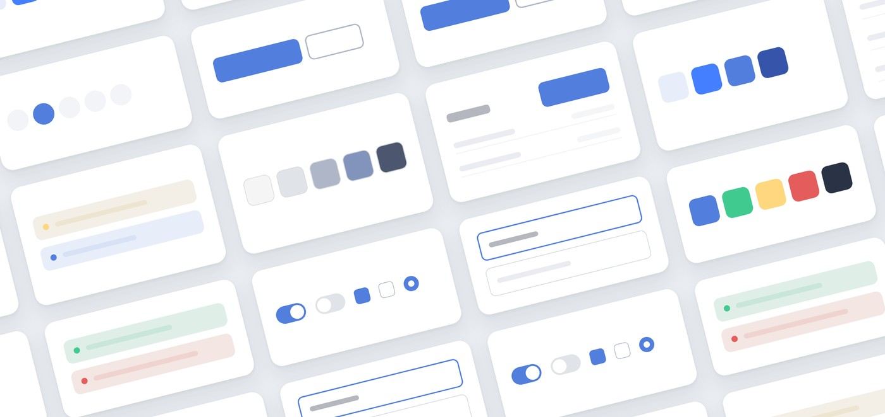
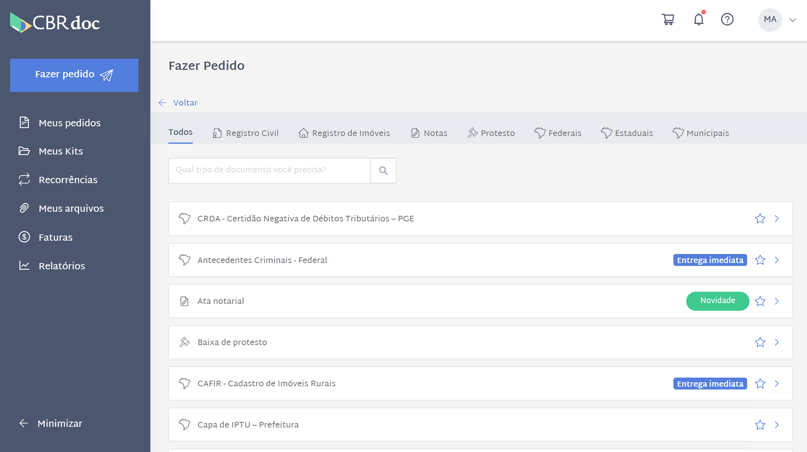
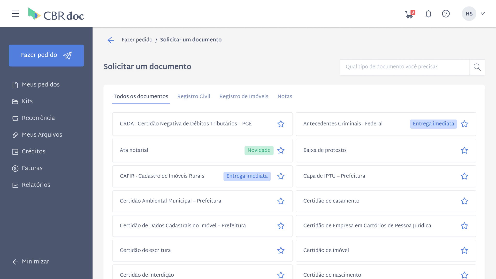
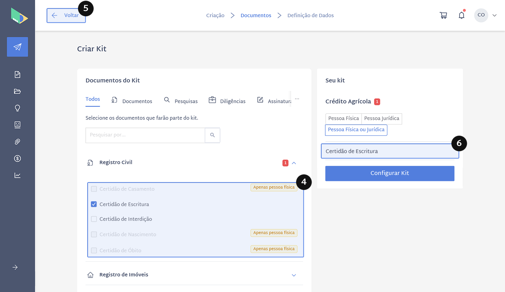
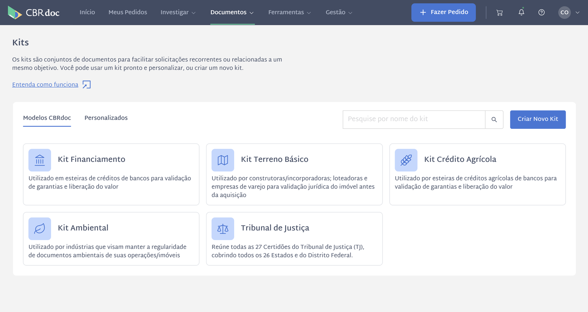

Design System e redesign de plataforma SaaS
Como única designer da CBRdoc, criei o Design System e redesenhei os fluxos de pedido e kits sem parar as entregas do produto.
Projeto
A CBRdoc é uma plataforma jurídica para solicitar certidões, pesquisas de processos e documentos. É usada por departamentos jurídicos de empresas, escritórios de advocacia, imobiliárias, bancos e construtoras, muitas vezes em volume. Com o DS estruturado, passei a usar IA no processo: o Claude gerava alternativas de tela e protótipos a partir do sistema, e eu comparava, refinava e especificava as soluções para o time.

Ver no Behance ↗
Cores, tokens, tipografia, componentes e ícones completos no Behance.
Ponto de partida
A plataforma estava ganhando novos serviços em ritmo constante, mas design e código não partiam da mesma base. Os componentes existiam no Figma, mas quebravam ou chegavam diferentes quando eram implementados. Tarefas voltavam do ambiente de teste por inconsistências visuais, gerando retrabalho para design e desenvolvimento, e a falta de padrão era percebida pelos próprios sócios. Com mais serviços entrando, o problema só tendia a crescer.
Como o produto não podia parar, propus à head de produto que o redesign entrasse nas histórias das próprias funcionalidades, sem disputar espaço no roadmap. Para definir por onde começar, percorri os fluxos principais de ponta a ponta e anotei os problemas tela por tela. A partir disso, planejei as mudanças em etapas: cada entrega nova já seguia o novo padrão, e as telas existentes eram migradas aos poucos. Com as telas principais no padrão, os ajustes passaram a ser pontuais, feitos junto com cada tarefa.
-
Style guide
Primeiro, uma base comum organizada a partir da interface existente: marca, tipografia, cores, espaçamentos, ícones e componentes.
-
Fluxos principais
Depois, criação de pedido e kits, os fluxos com mais impacto no uso. Cada tela redesenhada acrescentava componentes ao style guide.
-
Design System
Por fim, tokens compartilhados entre design e código, quando ficou claro que o style guide sozinho não evitava as divergências na implementação.
Redesign dos fluxos principais
Redesenhei primeiro os fluxos com mais impacto no uso da plataforma. Os componentes criados em cada um voltavam para o style guide e valiam para as telas seguintes.
A seguir, cada fluxo com a versão anterior, a nova e as principais decisões.
Criação de pedido
Criar um pedido é o fluxo principal da plataforma. Na versão anterior, a lista de documentos ocupava muito espaço na horizontal, e o formulário de dados ficava longo, com a ação principal no fim da página.
Escolha do documento

Imagem: Escolha do documento (antes)
Imagem: Escolha do documento (depois)- 1.Lista em grade de duas colunas, com a busca ao lado do título: o usuário vê mais opções de uma vez e encontra o documento com mais facilidade.
Localização do cartório
 Imagem: Localização do cartório (antes)
Imagem: Localização do cartório (antes) Imagem: Localização do cartório (depois)
Imagem: Localização do cartório (depois)- 2.Etapas e botão “Continuar” fixos no topo: o usuário sabe em que etapa está e avança sem precisar rolar até o fim do formulário.
Dados da certidão
 Imagem: Dados da certidão (antes)
Imagem: Dados da certidão (antes) Imagem: Dados da certidão (depois)
Imagem: Dados da certidão (depois)- 3.Tipo de certidão em um select com descrição em cada opção: as descrições continuam disponíveis, mas só aparecem quando o usuário abre a lista. O formulário fica bem mais curto.
- 4.Resumo do pedido com cada item e a opção de excluir: o usuário corrige o pedido sem voltar etapas.
Fluxo de kits
O kit existe para quem pede os mesmos conjuntos de documentos com frequência, e alguns passam de 30 certidões. A plataforma deveria tornar essa seleção rápida, mas o fluxo fazia o contrário: a listagem não ajudava a escolher os kits, montar um kit exigia mais esforço do que deveria e a navegação levava a caminhos sem saída.

- 1.O link para a FAQ aparecia sozinho, sem explicar para que serve o kit.
- 2.A coluna de documentos listava todos os itens de cada kit, e kits maiores geravam linhas enormes.
- 3.A data de criação ocupava uma coluna inteira sem ajudar a escolher o kit.

- 4.A lista mostrava certidões que não se aplicavam ao tipo de pessoa.
- 5.O botão “Voltar” levava para a tela inicial da plataforma, em qualquer etapa.
- 6.Não dava para remover itens pelo resumo do kit.

- 7.Documentos do mesmo tipo apareciam sem diferenciação.
- 8.O número ao lado de “Seu kit” não tinha rótulo.
- 9.O resumo era uma lista longa, sem separação e sem opção de excluir.
Fluxo redesenhado
Principais decisões
- Listagem: um texto explica o que são kits, com o link “Entenda como funciona”. A coluna de documentos mostra dois itens e “+N documentos”, a quantidade aparece num selo e a data de criação deu lugar ao responsável. Cada linha tem o botão “Solicitar”.
- Tipo de pessoa: definido no resumo do kit. As certidões que não se aplicam ficam desabilitadas e com o selo “Apenas pessoa física”.
- Navegação: o breadcrumb “Kits / Novo kit” substitui o “Voltar”, que mandava para a home.
- Organização da lista: categorias recolhíveis com contador de itens selecionados e abas agrupadas em Todos, Documentos, Pesquisa e Outros serviços.
- Resumo do kit: cada documento aparece em um card com a categoria embaixo do nome, o que diferencia documentos do mesmo tipo, e com a opção de remover. A quantidade ganhou rótulo (“Documentos selecionados”), no padrão usado em outras telas da plataforma.
Segunda versão: kits prontos
A primeira versão corrigiu a interface do fluxo. Na segunda, a plataforma passou a oferecer kits prontos para os usos mais comuns, como financiamento, terreno, crédito agrícola, ambiental e Tribunal de Justiça. O usuário pode usar um modelo como está ou personalizá-lo, sem selecionar documento por documento.
Para definir os modelos, busquei o time de operação, que conhecia os pedidos mais frequentes dos clientes, e validei a seleção de documentos com a advogada da empresa.

Design System
O style guide mostrava como a interface devia parecer, mas não dizia como cada valor devia ser aplicado. Os devs usavam o Ant Design com ajustes para a marca, sem tokens, e a mesma cor aparecia ora pura, ora com transparência, de uma tela para outra. Eu queria uma fonte única de referência para design e desenvolvimento, em que cada decisão visual fosse tomada uma vez e valesse para a plataforma inteira.
Cores primeiro
A dev de front-end levantou as cores usadas no CSS, o que mostrou variações da mesma cor espalhadas pelo código. Agrupei as repetidas e quase iguais e defini o papel de cada uma. Ficaram cinco famílias: azul, verde e amarelo da marca, vermelho para erro e uma escala de 10 neutros, que sustenta a maior parte da interface. Cada família ganhou uma escala numérica, para que design e código chamassem os tons pelo mesmo nome.
Revisei o contraste com base nas diretrizes de acessibilidade (WCAG) e propus ajustes em alguns tons. A decisão foi manter as cores originais da marca nesta etapa.
Tokens em duas camadas
São 24 primitivos, os valores brutos da paleta, que não vão direto para as telas, e 36 semânticos, que dizem para que cada cor serve: fundo, texto, borda, superfície, estados da interface e sobreposições.
Blue/500
#527EDD
Background/Brand
Botão primário
Text/Link
Links
Border/Focus
Campo em foco
Neutral/0
#FFFFFF
Background/Surface
Cards e painéis
Text/Inverse
Texto sobre botões
Neutral/400
#AEB6C8
Text/Disabled
Texto desabilitado
Border/Strong
Bordas de destaque
Depois das cores, a mesma lógica foi levada para tipografia e espaçamento. Quem desenha ou implementa uma tela não escolhe mais “um azul”, e sim “a cor de texto principal” ou “o fundo de erro”.
Componentes
A biblioteca de componentes no Figma, com seus estados, já existia e tinha crescido junto com as entregas: cada tela redesenhada acrescentava os componentes de que precisava. Com os tokens definidos, ajustei os componentes para usar os tokens no lugar de valores soltos. Assim, uma mudança de cor passou a refletir em todos eles de uma vez.
IA no processo
A IA entrou depois que o DS existia, e foi o DS que a tornou útil. Com o Figma agent, construí no Claude um arquivo do Design System a partir do Figma. Assim, as telas geradas já saíam com os componentes e tokens do produto.
- Exploração: o Claude gerava alternativas de tela para comparar. As soluções vinham cruas, e a escolha do que evoluir e o refinamento ficavam comigo.
- Protótipos navegáveis: para apresentar as soluções ao negócio e aos devs.
- Documentação: specs, descrição do projeto e regras de estado. Eu passava o prompt, o Claude escrevia e eu revisava.
Resultado e aprendizados
- DS e redesign em produção, com os tokens adotados pelo time de desenvolvimento.
- Menos tarefas voltando do ambiente de teste por inconsistências visuais, com Figma e código usando as mesmas referências.
- Os redesigns não foram testados com usuários. Os próximos indicadores a acompanhar seriam o tempo para montar um kit e o abandono na criação de pedido.